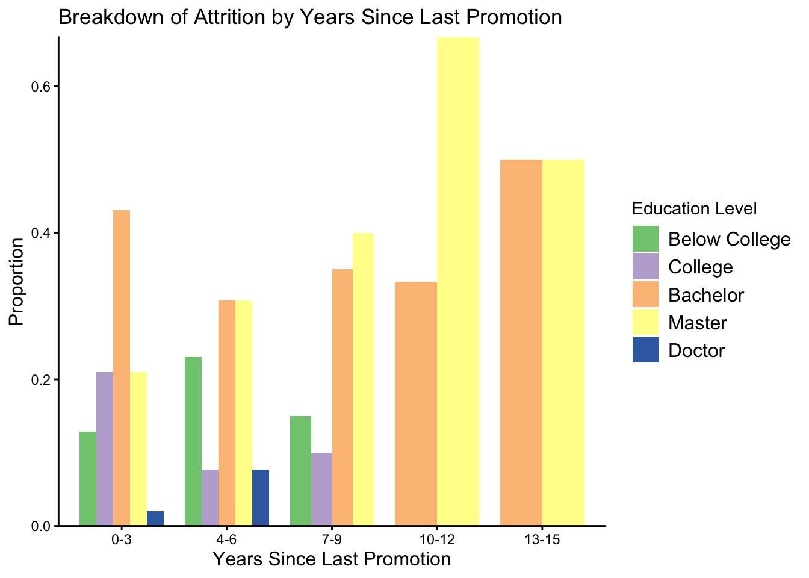
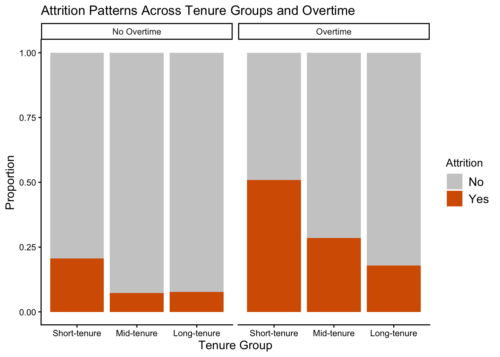
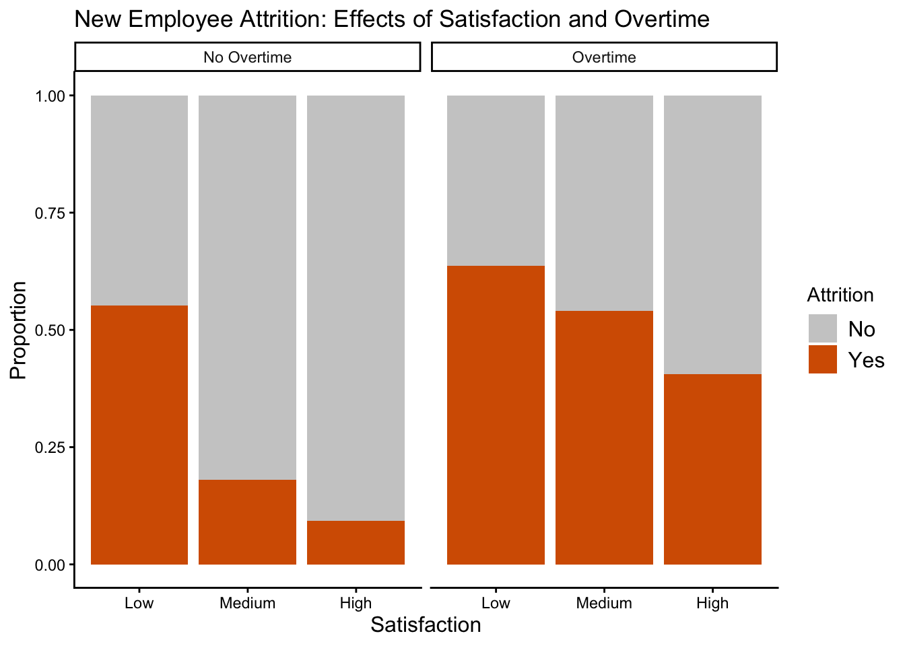

# Load necessary packages
library(tidyverse)
library(ggplot2)
library(janitor)Employee Attrition Exploration & Analyses
A People Analytics Practice Project
Introduction
The following document utilizes data from the IBM HR Analytics Employee Attrition Dataset. The primary purpose was to highlight and summarize skills in R, primarily things such as exploratory data analysis, as well as data cleaning, manipulation, and visualization.
This project also answers some brief questions regarding attrition and other metrics, while posing new areas for discussion.
It is important to note that units are not specified in the dataset for variables such as distance and income. When applicable, factors were converted using explicit scales from the information provided.
Setup
Importing Data
# Load the dataset
hr_data <- read_csv("data/WA_Fn-UseC_-HR-Employee-Attrition.csv")Cleaning
# Standardized column names
hr_data <- janitor::clean_names(hr_data) %>%
# Removed irrelevant variables
select(-any_of(c("employee_count", "standard_hours", "over18")))
# Created first data branch, for feature analysis
hr_features <- hr_data %>%
select(employee_number, attrition, age,
years_at_company, over_time, distance_from_home,
ends_with("_satisfaction"), work_life_balance)
# Creating vector for following ordinal factor creation, all have the same factor levels and labels
satisfaction_vars <- c("job_involvement", "job_satisfaction",
"environment_satisfaction", "relationship_satisfaction")
# Created second data branch for EDA
hr_eda <- hr_data %>%
mutate(
# Ordinal factor creation for satisfaction variables
across(
all_of(satisfaction_vars),
~ factor(.,
levels = 1:4,
labels = c("Low", "Medium", "High", "Very High"),
ordered = TRUE)
),
# Ordinal factor for work life balance (has different labels than satisfaction)
work_life_balance = factor(
work_life_balance,
levels = 1:4,
labels = c("Bad", "Good", "Better", "Best"),
ordered = TRUE
),
# Ordinal factor for education
education = factor(
education,
levels = 1:5,
labels = c("Below College", "College",
"Bachelor", "Master", "Doctor"),
ordered = TRUE
),
# Nominal categorical variables
across(
c(attrition, business_travel, department, education_field,
gender, job_role, marital_status, over_time),
as.factor
)
)Analyses
For the analyses, I wanted to explore different avenues that may help us get a better understanding of where attrition was more likely to occur, in turn allowing us to highlight groups that were at a bigger risk.
# Created a new table highlighting employees who attritted, selecting some specific variables
attrition_data <- hr_eda %>%
filter(attrition == "Yes") %>%
select(employee_number, distance_from_home, education, environment_satisfaction,
job_involvement, job_level, job_satisfaction,
num_companies_worked:last_col())Engagement Insights
Upon my initial glance at the data, the first question that caught my eye was about the relationship between job involvement and satisfaction, which I called “job engagement”.
[Add more about why I chose these variables?]
# Created a new table to display the attrition rates of each job involvement and satisfaction pair
engagement_df <- hr_eda %>%
group_by(job_involvement, job_satisfaction) %>%
summarize(attrition_rate = round((mean(attrition == "Yes")) * 100, 2))
# Created theme for following plots
graph_theme <- theme_classic() +
theme(
axis.title = element_text(size = 12),
legend.text = element_text(size = 12))
# Created heatmap showcasing the relationship between the two variables
engagement_heatmap <- ggplot(engagement_df) +
geom_tile(aes(x = job_involvement,
y = job_satisfaction,
fill = attrition_rate)) +
scale_fill_gradient() +
labs(x = "Job Involvement",
y = "Job Satisfaction",
title = "Job Engagement Heatmap",
fill = "Attrition Rate") +
theme_classic() +
graph_theme
engagement_heatmap
The heatmap shows that attrition rates are lowest at the extreme highs of job involvement and satisfaction. In fact, the rate for employees with both very high job involvement and satisfaction is 2.38%. As shown in the graphic, as these engagement levels decrease, attrition rates tend to increase.
Commute and Satisfaction
The following graphs outline the relationship between several factors: commute distance, satisfaction, and attrition.
I decided to take a look into insights of potential areas that may serve as explanation to why employees engage in attrition.
To do so, I created a new feature, satisfaction_index, which took the average value (from a scale of 1 [Low] to 4 [Very High]) of all other satisfaction variables, including environment, job, and relationship satisfaction, as well as work life balance.
*Note that commute distance does not have a unit because the data set is not specific.
# Engineered new feature, satisfaction_index that takes the average of the satisfaction variables
hr_features <- hr_features %>%
mutate(
satisfaction_index = (
environment_satisfaction +
job_satisfaction +
relationship_satisfaction +
work_life_balance
) / 4
)
# Graph the relationship between satisfaction and attrition
ggplot(hr_features, aes(satisfaction_index, attrition)) +
geom_boxplot() +
labs(
title = "Satisfaction Index and Attrition",
x = "Satisfaction Index Score",
y = "Attrition") +
graph_theme
# Graph the relationship between commute distance and attrition
ggplot(hr_features, aes(distance_from_home, attrition)) +
geom_boxplot() +
labs(
title = "Commute and Attrition",
x = "Commute Distance",
y = "Attrition") +
graph_theme
# Graph the relationship between commute distance and satisfaction
ggplot(hr_features, aes(distance_from_home, satisfaction_index)) +
geom_jitter(alpha = 0.2, width = 0.3) +
geom_smooth(method = "loess") +
labs(
title = "Commute and Satisfaction",
x = "Commute Distance",
y = "Satisfaction Index Score") +
graph_theme
The graphs mentioned above show that satisfaction is lower and commute distance slightly higher for employees experiencing attrition, although there isn’t a strong relationship between satisfaction and commute distance themselves.
Education Insights
Another question I wanted to examine was whether or not highly educated employees were leaving because they weren’t being promoted fast enough. The dataset divides all employees into five categories of education, from “Below College” to “Doctor”.
The reasoning behind this was that people who pursue a higher degree of education are often ambitious people, and as such they would likely feel disdain from not being promoted in quick intervals.
# Created a new table to gain insight on employees based on their education level
education_data <- attrition_data %>%
select(employee_number, education:job_satisfaction, percent_salary_hike,
total_working_years, years_at_company:years_since_last_promotion)
# Finding which level of education has had the highest attrition rate
ed_df <- hr_eda %>%
group_by(education) %>%
summarize(attrition_rate = round((mean(attrition == "Yes")) * 100, 2))
# Displaying the attrition rates of each education level
knitr::kable(ed_df)| education | attrition_rate |
|---|---|
| Below College | 18.24 |
| College | 15.60 |
| Bachelor | 17.31 |
| Master | 14.57 |
| Doctor | 10.42 |
As seen, the education level with the highest rate of attrition was the employees who had a “Below College” level, with a rate of 18.24%. Conversely, the education level with the lowest rate of attrition was the employees with a “Doctor” level education, with a rate of 10.42%.
Graph of Breakdown by Years Since Last Promotion
I created buckets based on when the employee was last promoted, with two graphs to display both the count and proportion of employees who experienced attrition.
# Created graph showing employees who attritted based on years since their last promotion
promo_graph_count <- education_data %>%
mutate(years_bucket = cut(years_since_last_promotion,
breaks = c(0, 3, 6, 9, 12, 15),
labels = c("0-3", "4-6", "7-9", "10-12", "13-15"),
include.lowest = TRUE)) %>%
ggplot(aes(years_bucket,
fill = education)) +
scale_x_discrete("Years Since Last Promotion") +
scale_y_continuous("Count", expand = c(0,0)) +
geom_bar(position = "dodge", width = .8) +
labs(title = "Breakdown of Attrition by Years Since Last Promotion",
fill = "Education Level") +
graph_theme +
scale_fill_brewer(palette = "Accent")
promo_graph_count
Proportion Graph
Code
# Created table and graph to show the proportion of employees who attritted based on years since their last promotion
promo_prop_df <- education_data %>%
mutate(years_bucket = cut(years_since_last_promotion,
breaks = c(0, 3, 6, 9, 12, 15),
labels = c("0-3", "4-6", "7-9", "10-12", "13-15"),
include.lowest = TRUE)) %>%
count(years_bucket, education)
Note
| years_bucket | education | n |
|---|---|---|
| 0-3 | Below College | 25 |
| 0-3 | College | 41 |
| 0-3 | Bachelor | 84 |
| 0-3 | Master | 41 |
| 0-3 | Doctor | 4 |
| 4-6 | Below College | 3 |
| 4-6 | College | 1 |
| 4-6 | Bachelor | 4 |
| 4-6 | Master | 4 |
| 4-6 | Doctor | 1 |
| 7-9 | Below College | 3 |
| 7-9 | College | 2 |
| 7-9 | Bachelor | 7 |
| 7-9 | Master | 8 |
| 10-12 | Bachelor | 1 |
| 10-12 | Master | 2 |
| 13-15 | Bachelor | 3 |
| 13-15 | Master | 3 |
promo_graph_prop <- promo_prop_df %>%
group_by(years_bucket) %>%
mutate(prop = n / sum(n)) %>%
ggplot(aes(years_bucket,
prop,
fill = education)) +
scale_x_discrete("Years Since Last Promotion") +
scale_y_continuous("Proportion", expand = c(0,0)) +
geom_col(position = "dodge", width = .8) +
labs(title = "Breakdown of Attrition by Years Since Last Promotion",
fill = "Education Level") +
graph_theme +
scale_fill_brewer(palette = "Accent")
promo_graph_prop
From the graphs, we can see that most attrition occurs in the first bucket, when it has been 0-3 years since an employee’s last promotion. We can also see that attritted employees with doctor’s degrees did not stay longer than 4-6 years after their last promotion.
Early Burnout?
So far, most of the analyses haven’t painted a clear picture on what may be correlated with attrition. The final dynamic I wanted to examine was the effects of overtime on employees, specifically:
Are newer employees with overtime and lower satisfaction more likely to leave?
*In the following analyses, the terms”new/newer employees” are used interchangeably with short-tenure.
For this question, I developed a multi-layered hypothesis:
Newer employees are more likely to leave than longer-tenured employees
Overtime increases attrition.
Low satisfaction and overtime lead to extreme attrition.
Tenure groups are defined as:
Short-tenure: ≤ 2 years
Mid-tenure: 3–7 years
Long-tenure: 8 years
Satisfaction groups (relative to their satisfaction index scores) are defined as:
Low: ≤ 2
Medium: > 2 and ≤ 3
High: > 3
# Created segments for employee tenure and satisfaction
hr_features <- hr_features %>%
mutate(
tenure = case_when(
years_at_company <= 2 ~ "Short-tenure",
years_at_company <= 7 ~ "Mid-tenure",
TRUE ~ "Long-tenure"),
satisfaction_group = case_when(
satisfaction_index <= 2 ~ "Low",
satisfaction_index <= 3 ~ "Medium",
TRUE ~ "High"
),
# Turn segments into ordered factors
tenure = factor(
tenure,
levels = c("Short-tenure", "Mid-tenure", "Long-tenure")
),
satisfaction_group = factor(
satisfaction_group,
levels = c("Low", "Medium", "High")
)
)
# Examining the attrition rate across tenure groups
hr_features %>%
group_by(tenure) %>%
summarize(
n = n(),
attrition_rate = round((mean(attrition == "Yes")) * 100, 2)
)%>%
arrange(desc(attrition_rate)) %>%
knitr::kable()| tenure | n | attrition_rate |
|---|---|---|
| Short-tenure | 342 | 29.82 |
| Mid-tenure | 600 | 13.33 |
| Long-tenure | 528 | 10.42 |
This first table shows us that short-tenured employees have a much higher attrition rate relative to all other employees. With a rate of 29.82%, short-tenured employees were more than twice as likely to leave compared to their mid and long-tenured counterparts.
# Examining attrition rate across tenure groups and OT
hr_features %>%
group_by(tenure, over_time) %>%
summarize(
n = n(),
attrition_rate = round((mean(attrition == "Yes")) * 100, 2)
) %>%
arrange(desc(attrition_rate)) %>%
knitr::kable()| tenure | over_time | n | attrition_rate |
|---|---|---|---|
| Short-tenure | Yes | 104 | 50.96 |
| Mid-tenure | Yes | 172 | 28.49 |
| Short-tenure | No | 238 | 20.59 |
| Long-tenure | Yes | 140 | 17.86 |
| Long-tenure | No | 388 | 7.73 |
| Mid-tenure | No | 428 | 7.24 |
Now, by introducing overtime into the equation, we see that newer employees with overtime are again much more likely to engage in attrition. In fact, more than half of all short-tenured employees with overtime experienced attrition within the organization.
Across all tenure groups, employees working overtime exhibited higher attrition rates than their non-overtime colleagues, suggesting that overtime is consistently associated with an increased likelihood of attrition.
I wanted to gain more insight on why this may be, so I took a deeper dive into the satisfaction of all aforementioned groups.
# Created a risk table to showcase the 5 groups with the highest attrition rates
risk_table <- hr_features %>%
group_by(tenure, over_time, satisfaction_group) %>%
summarize(
n = n(),
attrition_rate = round((mean(attrition == "Yes")) * 100, 2)
) %>%
ungroup() %>%
slice_max(attrition_rate, n = 5)
knitr::kable(risk_table)| tenure | over_time | satisfaction_group | n | attrition_rate |
|---|---|---|---|---|
| Short-tenure | Yes | Low | 11 | 63.64 |
| Short-tenure | No | Low | 29 | 55.17 |
| Short-tenure | Yes | Medium | 61 | 54.10 |
| Mid-tenure | Yes | Low | 15 | 53.33 |
| Short-tenure | Yes | High | 32 | 40.62 |
This table outlines the top five segments of employees with the highest attrition rates, i.e. those most at risk for attrition. As expected, newer employees comprised four of the five highest rates, with most being in the “Low” satisfaction group.
Overall, the results suggest an interaction between tenure, overtime, and satisfaction. The highest attrition rate was a dangerous 63.64%, where short tenure, overtime, and low satisfaction were observed.
# Create a graph to display effects of overtime on different tenure groups
overtime_graph <- ggplot(hr_features, aes(x = tenure, fill = attrition)) +
geom_bar(position = "fill") +
facet_grid(~ over_time,
labeller = labeller(
over_time = c("No" = "No Overtime",
"Yes" = "Overtime")
)
) +
labs(
title = "Attrition Patterns Across Tenure Groups and Overtime",
x = "Tenure Group",
y = "Proportion",
fill = "Attrition"
) +
graph_theme +
scale_fill_manual(values = c("No" = "grey80", "Yes" = "#D55E00"))
overtime_graph
The chart shows that in both groups (Overtime vs No Overtime), short-tenured employees have the highest attrition rates. Furthermore, overtime tends to display a pattern of higher attrition across all groups.
Next, we are only looking at the employees in the early stages of their tenure, as they are the group with the highest risk.
# Deeper dive into new employees and their satisfaction
new_employees <- hr_features %>%
filter(tenure == "Short-tenure")
new_overtime_graph <- ggplot(new_employees,
aes(x = satisfaction_group, fill = attrition)) +
geom_bar(position = "fill") +
facet_wrap(~ over_time,
labeller = labeller(
over_time = c("No" = "No Overtime",
"Yes" = "Overtime")
)
) +
labs(
title = "New Employee Attrition: Effects of Satisfaction and Overtime",
x = "Satisfaction",
y = "Proportion",
fill = "Attrition"
) +
graph_theme +
scale_fill_manual(values = c("No" = "grey80", "Yes" = "#D55E00"))
new_overtime_graph